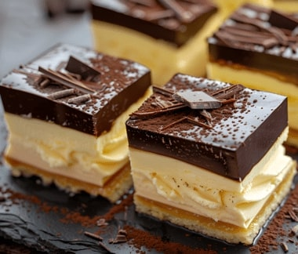

Kahvit
Meiltä löytyy laaja valikoima laadukkaita kahveja pehmeistä mauista mausteisiin makuihin

Leivonnaiset
Tarjoamme herkullisia paikallisesti sekä rakkaudella leivottuja leivonnaisia

Emma Espresso on intohimoinen kahvilayrittäjä, jonka juuret ulottuvat syvälle kahvikulttuuriin. Hänen matkansa alkoi opiskeluaikana, jolloin hän työskenteli osa-aikaisesti pienessä paikallisessa kahvilassa. Täällä Emma huomasi ensimmäistä kertaa kahvinvalmistuksen taiteen ja sen, kuinka jokainen kupillinen voi tuoda ihmiset yhteen. Hänen intohimonsa ja kiinnostuksensa alaa kohtaan kasvoivat vuosien varrella, ja hän päätti syventää osaamistaan tutustumalla kahvin viljelyyn ja valmistusprosesseihin eri puolilla maailmaa.